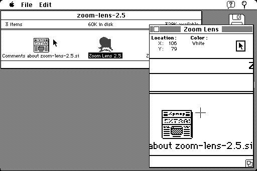

Download
zoomlens.zip (33K) Zoom Lens 2.5 repackaged into a zipped hfs disk image and checksum file. The disk image can be mounted with Mini vMac.
zoomlens.sit (29K) Zoom Lens 2.5 in the original format.
copyright: Steve Crutchfield
mod date: Jan 27, 1995
license: Freeware
A "small application that magnifies the portion of the screen under the mouse cursor." Can help in creating a pixel perfect user interface.
Also has other uses, "ranging from magnifying displays in a drawing program for extra precision, to enlarging small text to aid the vision-impaired, to just playing around."

If you find these downloads useful, please consider helping the Gryphel Project, which hosts them.
Here are the md5 checksums for the downloads, signed with Gryphel Key 5:
--------- GRY SIGNED TEXT --------- 8deb3331d54d760efb61fba174c321a2 zoomlens.zip 03a4fb1849ce3553971bc612bf091ff4 zoomlens.sit ------- BEGIN GRY SIGNATURE ------- Gry/4Xa8CFcUzxdN/OeGyQ0A0nUFra4qLSibwazgV7TkLpsD5UBZEMF3S43RZx/m jD7g0lvx5V7tUIXCDICIu5QVRubArT9/DHblHCNZmz+rdvj9hkNS3AdJd7fnwSMV KL8LxoZtFhJMQfp7cfLse5uemBB11C+Jyi7JCROofAEYsDtMzB/zJrqMJkYYH4y8 -------- END GRY SIGNATURE --------